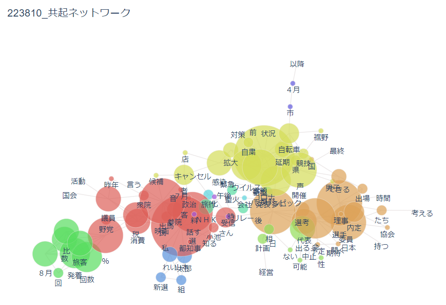
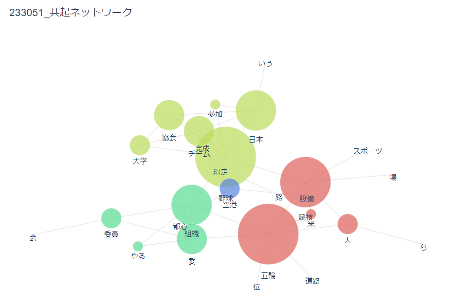

オリンピック データ比較
1965年のオリンピックに関しての記事

2021年のオリンピックに関しての記事

比較してみて
圧倒的な差は感染症について記載があるかないかであることが分かる。昨年のオリンピックはグラフを見てわかるように
赤は税や組織などオリンピックの事務に関連した事柄が多いが、それと対応するように多い記事は黄色のグラフが示している
ように感染症についての記事だ。コロナが流行しその対応が要求され、連日そのニュースが放送され、昨年のオリンピック
を印象付けていたことがこのグラフからも読み取ることができる。
一方で20世紀のオリンピックはもちろん緑が示すように組織など運営や事務関連の記事も多いが空港や野球、競技といった
ワードが目立つこともうかがえる。これは日本で初めて行われるオリンピックに備え国の雰囲気や競技について準備を入念に
行っていることが読み取れる。そして、日本の代表競技である野球も注目され始めていることも考えることができる。